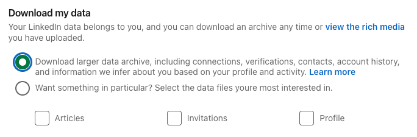
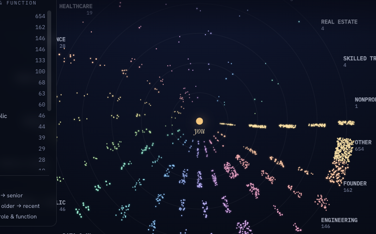

Part 2
Why did we do the Applied AI agent first? It gave you a feel for how quickly you can set up an agent, prompt it, and have it start doing useful work for you and with other people.
It was also a safer place to start. That agent works with mostly public information. If someone got access to it, you probably would not care very much, because it doesn't hold any sensitive, private data.
A personal agent is different. An EA or personal CRM you'll likely want to give it your calendar, your network, and maybe eventually your email. The moment it can see your data, you should think about where that data could go.
Before you connect anything, ask yourself if something went wrong, how wrong could it go?
We're talking to LLMs here, they make mistakes. When they can also write code those mistakes can be much worse. If your tax returns are on a computer your agent has access to, it could accidentally share them or delete them. If your social security number or passport photo are living in your personal email, it could get confused and share them.
As part of my own adventures in building agents, one of my most valuable is my EA / personal CRM, so I thought I'd share some of my own code. This is meant to do two things:
And that's the crazy part, is in a trusted group like this you can be sharing improvements and customizations amongst ourselves.
But remember, be cautious taking code from strangers!
You started this at the beginning (if not, do it now; LinkedIn takes a while to prepare it): open Get a copy of your data, pick the top option, the larger data archive (not the "want something in particular" choice below it), and download the zip when the email arrives. The big archive is the one that includes your connections.
If you don't have one, that's okay, you can learn from other people's and follow these steps later.

Then send these instructions along with your connections.csv file to your agent.
Paste to your agent — with the file attached
git clone https://github.com/maczumby/network-observatory.git, then set up the
network-observatory tool and build my map from this LinkedIn export. Read its
CLAUDE.md, import my connections, build the map, and send me a link to my
network observatory.Open it and that's your network as a star map: search anyone, color by company or seniority, click a person for details.
Everything is on your agent's machine with your data; the code I shared is just a fun way I created to help you visualize it. You can customize it by asking your agent to make changes.

The next paste is what makes this a relationship agent rather than a chart. It sets what it does for you privately, and (read this part carefully before you send it) what it may share when other people ask:
Paste to your agent — in the backchannel (raw file)
I want you to act as my personal relationship agent, built on the network
map and relationship memory you set up from my LinkedIn export.
Read all of this before you change anything.
YOUR JOB
Help me be a better connector. You know who I'm connected to, where they
work, and what I've logged about them. Use it to answer my questions, jog my
follow-ups, and help other people tap my network, within rules I set.
WHAT YOU DO FOR ME (in the backchannel, full access)
- "Who do I know at X / in Y field?": answer from the map, with names.
- "When did I last talk to Z, what do I owe them?": answer from the
relationship memory, citing where each fact came from.
- After I meet someone, I'll tell you; log it.
- Draft outreach only from facts you have. Never invent shared history.
Never send anything. Drafts come to me.
WHAT YOU DO FOR OTHERS (in shared channels, when asked)
When someone in a shared channel asks whether I know someone ("does she
know anyone in climate tech?"), you may:
- Suggest up to three names with public profile links, if the connection is
obviously public (same company, public role).
You may NOT share: contact details, my notes or history with anyone, how
well I actually know someone, or anything from my email or calendar. When a
request needs any of that, tell them you're checking with me, and bring it
to me via message_principal.
CHANGES TO MAKE NOW
1. Update your standing instructions with the shared-channel rules above,
plus this line: my word in any channel overrides these rules in the
moment.
2. Append a change-note:
> change-note <today's date>: became my relationship agent; may suggest
public connections in shared channels, asked by <my name> in the
backchannel.
CONFIRM BEFORE YOU'RE LIVE
Read your saved instructions back to me, then answer one trial question from
me in the backchannel and tell me how you'd answer the same question if a
stranger asked it in a shared channel, so I can hear the difference.This gets much more useful when you bring in a small group of people you trust, like your team.
Create one shared channel and invite everyone's agent (like we did before). Then ask questions like:
Each agent checks its own person's network and shares only what that person has allowed it to share.
That means your team can search across all of your networks at once without anyone handing over their full contact list. You get the benefit of a much bigger network while each person still keeps control of their own data.
And if your agent says something that makes you think, "Wait, I don't want it sharing that," that's useful. Go back to your private channel, tighten the rule.